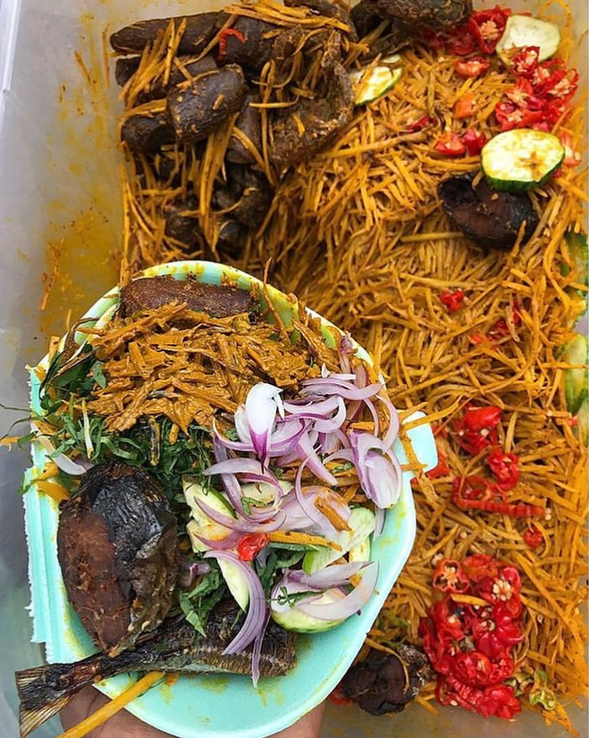

Delicious Abacha

Delicious Abacha Recipe
Abacha, also known as African salad or Abacha in the Igbo language,
is a traditional Nigerian dish made from dried cassava.
Ingredients for abacha
- 2 cups dried Abacha (cassava strips)
- 1 cup palm oil
- 1/2 cup ground crayfish
- 1/2 cup ground pepper (to taste)
- 1 large onion, thinly sliced
- 1/2 cup ground locust beans (iru, optional)
- 1-2 cups water (for soaking)
- Salt to taste
- 1-2 stock cubes (optional)
- Fresh utazi or scent leaves for garnish (optional)
Steps/Procedure
- Place dried abacha in a bowl and soak with hot water
for about 5 minutes.
drain and set aside.
- In a separate bowl, mix palm oil with ground crayfish, ground pepper,
and optional locust beans (iru).
- Add the softened Abacha to the dressing and mix thoroughly.
- Stir in the sliced onions and season with salt and stock cubes,
mixing well.
- Garnish with fresh utazi or scent leaves if desired.
Serve as a side dish or main course.